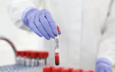
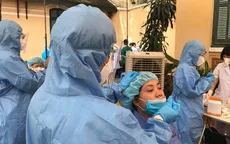

Thủ tướng Chính phủ ban hành Chỉ thị phục hồi sản xuất tại các khu vực sản xuất công nghiệp
Phó Thủ tướng Chính phủ Lê Văn Thành vừa ký ban hành Chỉ thị số 27/CT-TTg ngày 3/10/2021 của Thủ tướng Chính phủ về việc phục hồi sản xuất tại các khu vực sản xuất công nghiệp trong bối cảnh phòng, chống dịch bệnh COVID-19.
18:33 03/10/2021
Thông Báo Về 5.375 Ca Mắc Mới
Tính từ 17h ngày 02/10 đến 17h ngày 03/10, trên Hệ thống Quốc gia quản lý ca bệnh COVID-19 ghi nhận 5.376 ca nhiễm mới, trong đó 09 ca nhập cảnh và 5.367 ca ghi nhận trong nước (giảm 110 ca so với ngày trước đó) tại 39 tỉnh, thành phố (có 2.674 ca trong cộng đồng).
Các tỉnh, thành phố ghi nhận ca bệnh như sau: TP. Hồ Chí Minh (2.461), Bình Dương ( 1.283), Đồng Nai (824), An Giang (147), Long An (85), Kiên Giang (75), Bình Thuận ( 73), Tây Ninh (54), Khánh Hòa (50), Hà Nam (39), Đồng Tháp (35), Cần Thơ (33), Cà Mau (24), Hậu Giang (20), Quảng Bình (19), Đắk Lắk (17), Quảng Trị (15), Tiền Giang (13), Bà Rịa - Vũng Tàu (13), Ninh Thuận (12), Bình Phước (12), Nghệ An (11), Bình Định (8 ), Đắk Nông (6), Phú Yên (5), Bến Tre (5), Vĩnh Long (4), Bạc Liêu (4), Hà Nội (4), Quảng Ngãi (3), Hà Tĩnh (3), Lâm Đồng (2), Trà Vinh (2), Bắc Giang (1), Gia Lai (1), Kon Tum (1), Đà Nẵng (1), Thừa Thiên Huế (1), Phú Thọ (1).
- 
-
Bộ Y tế: Không sử dụng xét nghiệm kháng thể SARS-CoV-2 sai mục đích
-
Bộ Y tế đề nghị Sở Y tế chỉ đạo các đơn vị liên quan về việc không sử dụng...
-
Thủ tướng Chính phủ ban hành Chỉ thị phục hồi sản xuất tại các khu vực...
-
Phó Thủ tướng Chính phủ Lê Văn Thành vừa ký ban hành Chỉ thị số 27/CT-TTg...
-
Từ nay đến giữa năm 2022, Việt Nam tiếp cận khoảng 150 triệu liều...
-
Đó là thông tin được Thứ trưởng Bộ Y tế Đỗ Xuân Tuyên cho biết tại buổi Họp...
- 
-
Ngày 3/10: Có 5.376 ca mắc COVID-19, số bệnh nhân khỏi lập kỷ lục...
-
SKĐS - Bản tin dịch COVID-19 ngày 3/10 của Bộ Y tế cho biết có 5.376...
-
Trưa 3/10: Cả nước tiêm gần 45,2 triệu liều vaccine COVID-19; Quảng...
-
SKĐS - Cập nhật trên Cổng thông tin tiêm chủng vaccine COVID-19 trưa ngày...

-
Sáng 3/10: Gần 659.800 ca COVID-19 đã khỏi bệnh; Mỹ trao tặng Việt...
-
SKĐS - Đến nay, Việt Nam đã điều trị khỏi gần 659.800 ca bệnh COVID-19 trong...
Những quyết định quan trọng giúp giảm tỷ lệ tử vong do Covid-19
Số bệnh nhân Covid-19 tử vong ghi nhận quanh mốc 150 ca trong 1 tuần qua, giảm mạnh so với thời điểm 1 tháng trước đây. Thực hiện quyết liệt giãn cách xã hội...